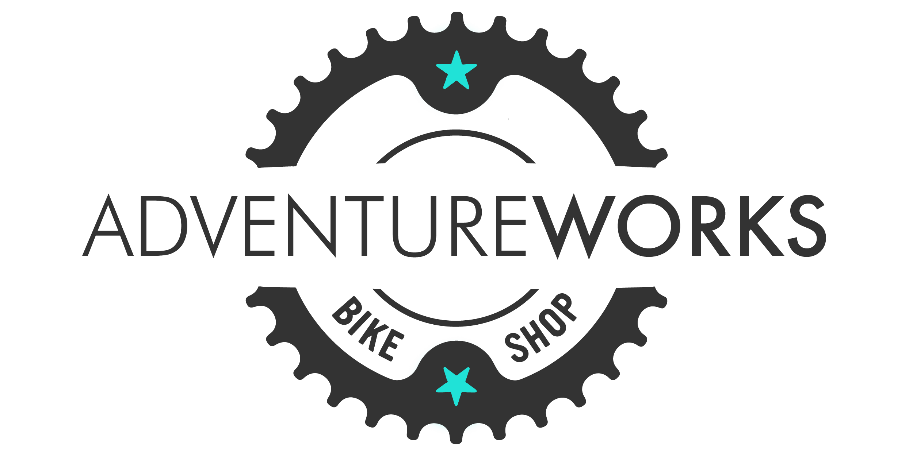

This project explores the use of SQL for efficient data cleaning, showcasing techniques to identify and rectify discrepancies, remove duplicates, and handle missing values. Through SQL, I was able to use different strategies to enhance data integrity and accuracy, laying a solid foundation for reliable data analysis and informed decision-making.

This project conducts exploratory data analysis on a company's human resources dataset using SQL queries. The analysis provides a thorough overview of the company's employee profile and trends. The SQL code can serve as a template for conducting human resources analytics.
This project delves into sentiment analysis of TED Talks, specifically Phil Hansen's "Embrace the Shake" and Vijay Kumar's "Robots that Fly...and Cooperate," using R programming. It employs R packages like tidyverse for data manipulation, tidytext for text mining, and ggplot2 for visualization, following a workflow of data cleaning, tokenization, stop word removal, word frequency, and sentiment analysis to compare the emotional and thematic content of overcoming personal adversity versus technological innovation in robotics

This project showcases how I was able to utilise R programming to create a predictive model. The goal is to analyse Alzheimer's disease-related features and develop a model to predict dementia status. Analysis conducted includes data cleaning and preprocessing, exploratory data analysis and visualisation, summary statistics, correlation analysis, K-means clustering, feature selection using wrapper methods, and Logistic regression modelling with cross-validation.
This project explores the intricate dynamics of contraceptive method choice among Indonesian women, utilising a dataset from the National Indonesia Contraceptive Prevalence Survey. Through rigorous data cleaning, exploratory analysis, and machine learning models such as Logistic regression, Support Vector Machine (SVM) and Decision Trees, the study delves into how demographic and socio-economic factors influence family planning decisions. This comprehensive analysis not only showcases my skills in handling complex datasets using Python and various data science techniques but also offers valuable insights for policymakers aiming to enhance family planning programs.

In this project, I harnessed Power BI to craft detailed visualisations of a bike shop's revenue, profit, orders, and returns, drawing from a comprehensive dataset. Through a series of steps including data transformation, shaping, and the creation of a robust data model, I delved into DAX to perform advanced calculations, culminating in the development of dynamic dashboards and analytical tools that illuminate global trends across timeframes, products, and customer segments, showcasing the practical application of course concepts in real-world data analysis
This Excel project delves into bike purchase data to uncover insights into various customer segments, employing pivot tables and a straightforward dashboard for data visualization. It presents an initial foray into data analysis, setting the stage for more intricate explorations in the future. The project serves as a foundational exercise in harnessing Excel's capabilities for data manipulation and presentation, anticipating further advancements in data modeling and interactive dashboard development.